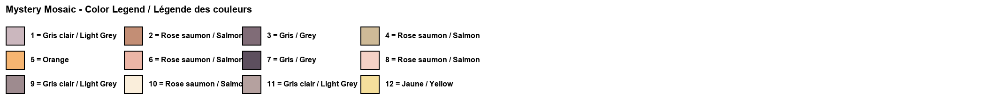
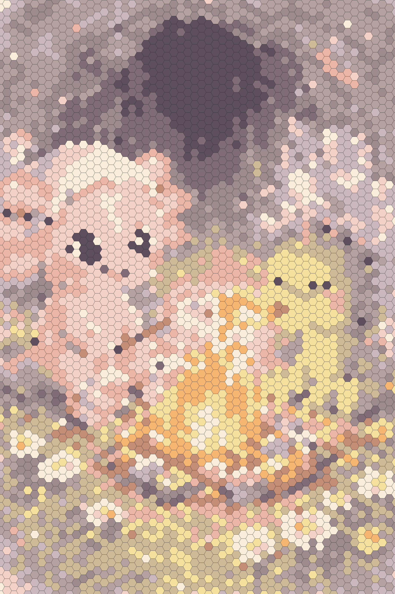

Original ImageImage originaleImagen original

Mystery Mosaic – Can you reveal the hidden image?Mosaïque mystère – Peux-tu révéler l'image cachée ?Mosaico misterioso – ¿Puedes revelar la imagen oculta?
Color LegendLégende des couleursLeyenda de colores

Answer Key (Spoiler!)Corrigé (Spoiler !)Clave de respuestas (¡Spoiler!)

Download More Mystery MosaicsCrée ta propre mosaïque mystère !ÂDescarga mas mosaicos misteriosos
Choose from Coco's prepared printable mosaic pages, already made and ready to download.Télécharge n'importe quelle image et transforme-la en mosaïque mystère imprimable. Essaie 3 gratuitement !Sube cualquier imagen y transfórmala en un mosaico misterioso imprimible. ¡Prueba 3 gratis!
🎨 Create on Univers Studio🎨 Créer sur Univers Studio🎨 Crear en Univers StudioAbout This Dragon Mystery Mosaic
Unleash your inner artist with this free printable dragon mystery mosaic! This exciting color by number activity features Coco the Axolotl and an adorable baby dragon roasting marshmallows together inside a sparkling crystal cave. As kids match each number to its color and fill in the hexagonal tiles, the hidden scene magically appears before their eyes.
Dragon coloring pages are among the most popular kids activities, and this mosaic coloring page adds an extra layer of fun with its mystery element. Children won't know what the final picture looks like until they complete the entire printable color by number sheet. It's a perfect blend of art, patience, and surprise that keeps young minds focused and entertained.
This free printable is ideal for rainy day activities, classroom rewards, or quiet time at home. Print as many copies as you need and share the magic with friends! Ready to create your own designs? Open the examples library for more prepared mystery mosaics.
À propos de cette mosaïque mystère dragon
Libérez l'artiste qui sommeille en vous avec cette mosaïque mystère dragon gratuite à imprimer ! Cette activité passionnante de coloriage par numéros met en scène Coco l'Axolotl et un adorable bébé dragon qui font griller des guimauves ensemble dans une grotte de cristal étincelante. Au fur et à mesure que les enfants associent chaque numéro à sa couleur et remplissent les cases hexagonales, la scène cachée apparaît magiquement sous leurs yeux.
Les pages de coloriage de dragon sont parmi les activités pour enfants les plus populaires, et cette page de coloriage mosaïque ajoute un niveau supplémentaire de plaisir avec son élément mystère. Les enfants ne sauront pas à quoi ressemble l'image finale jusqu'à ce qu'ils complètent l'intégralité du coloriage par numéros. C'est un mélange parfait d'art, de patience et de surprise.
Ce gratuit à imprimer est idéal pour les jours de pluie, les récompenses en classe ou les moments calmes à la maison. Imprimez autant de copies que nécessaire ! Prêt à créer vos propres designs ? Essayez notre générateur de mosaïques gratuit !
Sobre este mosaico misterioso de dragón
¡Libera tu artista interior con este mosaico misterioso de dragón gratuito para imprimir! Esta emocionante actividad de colorear por números presenta a Coco el Axolotl y un adorable bebé dragón asando malvaviscos juntos dentro de una brillante cueva de cristal. A medida que los niños emparejan cada número con su color y rellenan las casillas hexagonales, ¡la escena oculta aparece mágicamente ante sus ojos!
Las páginas para colorear de dragones están entre las actividades infantiles más populares, y esta página de mosaico para colorear añade un nivel extra de diversión con su elemento misterioso. Los niños no sabrán cómo se ve la imagen final hasta que completen toda la hoja de colorear por números. Es una mezcla perfecta de arte, paciencia y sorpresa que mantiene las mentes jóvenes enfocadas y entretenidas.
Este imprimible gratuito es ideal para dÃas lluviosos, recompensas en el aula o tiempo tranquilo en casa. ¡Imprime tantas copias como necesites! ¿Listo para crear tus propios diseños? Abre la biblioteca de ejemplos para ver mas mosaicos preparados.
More Mystery MosaicsPlus de mosaïques mystèresMás mosaicos misteriosos